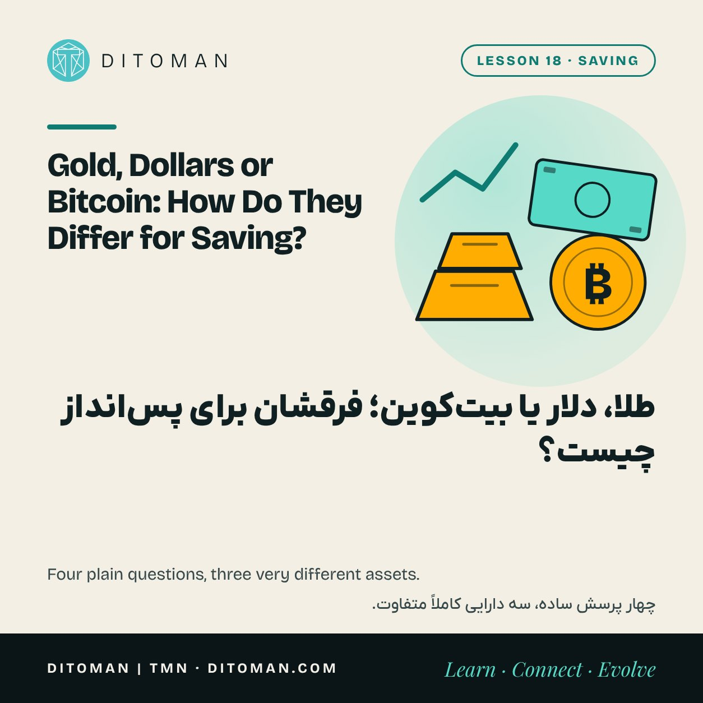

Ouro, dólares ou Bitcoin: em que diferem para poupar?
طلا، دلار یا بیتکوین؛ فرقشان برای پسانداز چیست؟
Três coisas a que as pessoas recorrem quando deixam de confiar no dinheiro. Esta lição não diz qual comprar. Compara-as com quatro perguntas simples: quanto oscila o preço, com que facilidade se vende, quanto custa guardá-lo e o que pode correr mal.
سه چیزی که آدمها وقتی اعتمادشان به پول نقد کم میشود سراغش میروند. این درس نمیگوید کدام را بخرید. آنها را با چهار پرسش ساده مقایسه میکند: قیمت چقدر بالا و پایین میرود، چقدر راحت فروخته میشود، نگه داشتنش چه هزینهای دارد و چه چیزی ممکن است خراب شود.
Conteúdo da lição
محتوای درس
Leia a lição em inglês ou persa.
درس را به فارسی یا انگلیسی بخوانید.
A lição 12 mostrou o que a inflação faz ao dinheiro parado. O pensamento natural seguinte é: então devo guardar outra coisa. Em muitas famílias a resposta é a mesma há gerações: ouro ou dólares. Nos últimos anos, um terceiro nome entrou na conversa: a bitcoin.
As pessoas discutem qual é o melhor como se houvesse uma só resposta. Não há, porque os três são coisas de tipo diferente. Podemos compará-los de forma justa com as mesmas quatro perguntas.
Primeiro: poupar não é especular
Poupar é pôr dinheiro de lado para que esteja lá quando precisar. O objetivo é manter o poder de compra.
Investimento é aceitar risco por um rendimento que vem de algo produtivo: um negócio, um imóvel, um empréstimo.
Especular é comprar algo sobretudo porque espera que o preço suba.
O mesmo ativo pode servir qualquer um dos três. O que muda é o seu horizonte temporal e quanta perda consegue suportar. Dinheiro de que vai precisar daqui a seis meses está numa posição muito diferente de dinheiro em que não vai tocar durante dez anos.
Pergunta 1: quanto oscila o preço?
Os três oscilam, mas não na mesma medida.
O dólar é o que menos se move face aos bens no curto prazo, embora perca poder de compra lentamente pela sua própria inflação. A inflação dos EUA atingiu o pico acima de 9 por cento em meados de 2022.
Ouro tem longos períodos calmos e depois movimentos bruscos. Depois do pico de 2011, perto de 1 900 dólares a onça, caiu cerca de 45 por cento nos quatro anos seguintes antes de recuperar mais tarde.
Bitcoin oscila muito mais. De cerca de 69 000 dólares em novembro de 2021 caiu abaixo de 16 000 dólares um ano depois, uma queda de mais de 75 por cento, e mais tarde subiu a novos máximos acima de 126 000 dólares em outubro de 2025.
Uma grande oscilação não é boa nem má por si. Decide quanto tempo tem de conseguir esperar.
Pergunta 2: com que facilidade se vende?
Isto é liquidez: voltar a transformar o ativo em dinheiro utilizável depressa e perto do preço cotado.
Os dólares e as moedas de ouro têm mercados profundos em quase todo o lado, mas os preços de compra e de venda diferem. Essa diferença, o spread, é um custo que paga duas vezes. Em peças pequenas de ouro, e em joias com custo de feitio, a diferença é grande.
A Bitcoin negoceia 24 horas por dia, e grandes quantias podem ser vendidas em minutos nas grandes corretoras. Na prática, porém, a sua liquidez depende do seu acesso a uma corretora e a um banco ou intermediário do outro lado.
Pergunta 3: quanto custa guardá-lo?
Dólares físicos e ouro têm de ser guardados num lugar seguro contra roubo, fogo e danos. Notas gastas ou antigas podem ser mais difíceis de vender.
A Bitcoin não pesa nada, mas guardá-la em segurança significa gerir uma chave ou confiar num custodiante, como explicou a lição 13.
Nenhum dos três paga juros por estar parado. É uma diferença real face a um depósito, uma obrigação ou um negócio.
Pergunta 4: o que pode correr mal?
| Dólares (numerário) | Ouro | Bitcoin | |
|---|---|---|---|
| Preço | Perda lenta para a inflação | Longos períodos fracos | Quedas de mais de metade |
| Guardar | Roubo, danos, notas gastas | Roubo, falsificações, pureza | Chave perdida, burlas, corretora falida |
| Vendê-lo | Diferença entre compra e venda | Diferença e custo de feitio | Precisa de acesso a uma corretora |
| Regras | Limites à detenção ou negociação | Impostos e limites ao comércio | Regulação em mudança |
Cada linha é um tipo de risco diferente. Repare que nenhuma coluna está vazia.
Porque é que as pessoas repartem as poupanças
Como os três falham de formas diferentes, nem sempre caem juntos. Ter mais de um tipo de ativo, em quantias ajustadas a quando vai precisar do dinheiro, chama-se diversificação. Não elimina o risco. Evita depender de que uma única história esteja certa.
Quanto de cada um, se algum, depende do seu rendimento, das suas necessidades e das regras do seu país. É uma decisão pessoal que esta lição não pode tomar por si.
O que retirar disto
Saiba se está a poupar, investir ou especular antes de escolher um ativo.
Compare ativos com as mesmas quatro perguntas: oscilação, liquidez, custo de guarda e o que pode correr mal.
O dólar é mais estável mas perde valor devagar. O ouro é antigo e lento, com longos períodos fracos. A bitcoin pode subir depressa e cair mais de metade.
O spread é um custo pago nas duas pontas.
Nada aqui é uma recomendação de compra ou venda.
درس ۱۲ نشان داد تورم با پول نقدی که بیحرکت میماند چه میکند. فکر بعدی طبیعی است: پس باید چیز دیگری نگه دارم. در خیلی از خانوادهها جواب نسلهاست که یکی بوده: طلا یا دلار. در چند سال اخیر نام سومی هم به این گفتوگو اضافه شده: بیتکوین.
آدمها طوری بحث میکنند که انگار یک جواب درست وجود دارد. وجود ندارد، چون این سه از یک جنس نیستند. میشود آنها را منصفانه با چهار پرسش یکسان کنار هم گذاشت.
اول: پسانداز با سفتهبازی فرق دارد
پسانداز یعنی کنار گذاشتن پول تا وقتی لازم شد، باشد. هدفش حفظ قدرت خرید است.
سرمایهگذاری یعنی پذیرفتن ریسک برای بازدهی که از یک کار مولد میآید: کسبوکار، ملک یا وام.
سفتهبازی یعنی خریدن چیزی، بیشتر به این امید که قیمتش بالا برود.
یک دارایی میتواند برای هر سه به کار برود. چیزی که فرق میکند افق زمانی شما و مقدار ضرری است که تحملش را دارید. پولی که شش ماه دیگر لازم میشود با پولی که ده سال به آن دست نمیزنید در دو وضع کاملاً متفاوت است.
پرسش ۱: قیمت چقدر بالا و پایین میرود؟
هر سه تکان میخورند، ولی نه به یک اندازه.
دلار در کوتاهمدت کمتر از همه در برابر کالاها تکان میخورد، هرچند با تورم خودش آرامآرام قدرت خرید از دست میدهد. تورم آمریکا در میانهی ۲۰۲۲ از ۹ درصد بالاتر رفت.
طلا دورههای آرام طولانی دارد و بعد حرکتهای تند. بعد از اوج سال ۲۰۱۱ نزدیک ۱٬۹۰۰ دلار برای هر اونس، در چهار سال بعد حدود ۴۵ درصد افت کرد و بعدها دوباره بالا رفت.
بیتکوین خیلی بیشتر نوسان دارد. از حدود ۶۹ هزار دلار در نوامبر ۲۰۲۱ یک سال بعد به زیر ۱۶ هزار دلار رسید، یعنی افتی بیش از ۷۵ درصد، و بعدها در اکتبر ۲۰۲۵ به اوج تازهای بالای ۱۲۶ هزار دلار رفت.
نوسان زیاد بهخودیخود خوب یا بد نیست. تعیین میکند چقدر باید بتوانید صبر کنید.
پرسش ۲: چقدر راحت فروخته میشود؟
این همان نقدشوندگی است: تبدیل سریع دارایی به پول قابلخرج، با قیمتی نزدیک به قیمت اعلامشده.
دلار و سکهی طلا تقریباً همهجا بازار پررونقی دارند، ولی قیمت خرید و فروششان یکی نیست. این فاصله، هزینهای است که دو بار میپردازید. برای قطعههای کوچک طلا و برای زیورآلاتی که اجرت ساخت دارند، این فاصله زیاد است.
بیتکوین شبانهروز معامله میشود و در صرافیهای بزرگ میشود مبلغ زیادی را در چند دقیقه فروخت. ولی در عمل، نقدشوندگی برای خودِ شما به دسترسیتان به صرافی و به بانک یا واسطهی آن طرف بستگی دارد.
پرسش ۳: نگه داشتنش چه هزینهای دارد؟
دلار و طلای فیزیکی را باید جایی نگه داشت که از دزدی، آتش و آسیب در امان باشد. اسکناس فرسوده یا قدیمیتر هم ممکن است سختتر فروخته شود.
بیتکوین وزنی ندارد، ولی نگهداری امنش یعنی مدیریت یک کلید یا اعتماد به یک نگهدارنده؛ درس ۱۳ این را توضیح داد.
هیچکدام از این سه با بیحرکت ماندن سودی نمیدهند. این تفاوتی واقعی با سپرده، اوراق یا کسبوکار است.
پرسش ۴: چه چیزی ممکن است خراب شود؟
| دلار (نقد) | طلا | بیتکوین | |
|---|---|---|---|
| قیمت | افت آرام با تورم | دورههای ضعف طولانی | افت بیش از نصف |
| نگهداری | دزدی، آسیب، اسکناس فرسوده | دزدی، تقلبی بودن، عیار | گم شدن کلید، کلاهبرداری، ورشکستگی صرافی |
| فروش | فاصلهی خرید و فروش | فاصلهی قیمت و اجرت | نیاز به دسترسی به صرافی |
| قواعد | محدودیت نگهداری یا معامله | مالیات و محدودیت معامله | مقررات در حال تغییر |
هر ردیف نوع دیگری از ریسک است. دقت کنید که هیچ ستونی خالی نیست.
چرا آدمها پساندازشان را پخش میکنند
چون این سه به شکلهای متفاوتی آسیب میبینند، همیشه با هم پایین نمیآیند. نگه داشتن بیش از یک نوع دارایی، به اندازهای که با زمان نیازتان به پول بخواند، تنوعبخشی نام دارد. ریسک را حذف نمیکند. فقط نمیگذارد همهچیز به درست بودن یک روایت بسته باشد.
اینکه از هر کدام چقدر، یا اصلاً نه، به درآمد، نیازها و قواعد کشور شما بستگی دارد. این تصمیمی شخصی است که این درس نمیتواند بهجای شما بگیرد.
چه برداشتی کنیم
پیش از انتخاب دارایی، بدانید دارید پسانداز میکنید، سرمایهگذاری یا سفتهبازی.
داراییها را با همان چهار پرسش مقایسه کنید: نوسان، نقدشوندگی، هزینهی نگهداری و چیزهایی که ممکن است خراب شود.
دلار باثباتتر است ولی آرامآرام ارزش از دست میدهد. طلا قدیمی و کند است و دورههای ضعف طولانی دارد. بیتکوین میتواند تند بالا برود و بیش از نصف افت کند.
فاصلهی قیمت خرید و فروش هزینهای است که در هر دو سر میپردازید.
هیچ بخشی از این درس توصیه به خرید یا فروش چیزی نیست.
Duas lições que acompanham esta
دو درسی که کنار این درس مینشینند
A lição 12 explica a inflação que leva as pessoas a procurar alternativas. A lição 06 dá cinco perguntas a fazer a si mesmo antes de comprar seja o que for.
درس ۱۲ تورمی را توضیح میدهد که آدمها را به فکر جایگزین میاندازد. درس ۶ پنج پرسشی را میدهد که پیش از خرید هر چیزی باید از خودمان بپرسیم.
Conceitos-chave
مفاهیم کلیدی
- Poupar, investir, especular
- Horizonte temporal
- Volatilidade
- Queda desde o pico
- Liquidez
- Spread
- Armazenamento e custódia
- Diversificação
- پسانداز، سرمایهگذاری، سفتهبازی
- افق زمانی
- نوسان
- افت از اوج
- نقدشوندگی
- فاصلهی قیمت خرید و فروش
- نگهداری
- تنوعبخشی
Objetivos de aprendizagem
اهداف یادگیری
- Distinguir poupar de investir e especular.
- Compare dólares, ouro e bitcoin quanto às oscilações de preço.
- Explique a liquidez e o spread.
- Indique um risco de guarda para cada um dos três.
- Dizer o que a diversificação faz e não faz.
- پسانداز را از سرمایهگذاری و سفتهبازی تشخیص دهید.
- دلار، طلا و بیتکوین را از نظر نوسان قیمت مقایسه کنید.
- نقدشوندگی و فاصلهی قیمت خرید و فروش را توضیح دهید.
- برای هر کدام از این سه، یک ریسک نگهداری نام ببرید.
- بگویید تنوعبخشی چه کاری میکند و چه کاری نمیکند.
Questionário
آزمونک
Veja o que ficou consigo. A resposta está por baixo de cada pergunta.
ببین چه چیزی در ذهنت مانده. پاسخ زیر هر پرسش آمده است.
Pergunta 1
پرسش ۱
Qual é o objetivo de poupar?
هدف پسانداز چیست؟
A. O maior retorno possível
الف. بیشترین سود ممکن
B. Manter poder de compra para quando o dinheiro for preciso
ب. حفظ قدرت خرید برای وقتی که پول لازم میشود
C. Bater os ganhos dos outros
ج. جلو زدن از سود دیگران
Resposta certa: B
پاسخ درست: ب
Pergunta 2
پرسش ۲
Qual dos três mostrou as maiores quedas de preço?
کدامیک از این سه بزرگترین افت قیمت را نشان داده است؟
A. Dólares
الف. دلار
B. Ouro
ب. طلا
C. Bitcoin
ج. بیتکوین
Resposta certa: C. Caiu mais de 75% entre novembro de 2021 e novembro de 2022.
پاسخ درست: ج. از نوامبر ۲۰۲۱ تا نوامبر ۲۰۲۲ بیش از ۷۵٪ افت کرد.
Pergunta 3
پرسش ۳
O que é o spread?
فاصلهی قیمت خرید و فروش چیست؟
A. A diferença entre o preço de compra e o de venda
الف. تفاوت قیمتی که میخرید با قیمتی که میفروشید
B. O juro anual
ب. سود سالانه
C. O peso de uma moeda
ج. وزن یک سکه
Resposta certa: A
پاسخ درست: الف
Pergunta 4
پرسش ۴
Que afirmação é verdadeira para os três ativos?
کدام جمله دربارهی هر سه دارایی درست است؟
A. Pagam juros enquanto os detém
الف. در مدت نگهداری سود میدهند
B. Não rendem nada por estarem parados
ب. با بیحرکت ماندن سودی نمیدهند
C. O preço nunca desce
ج. قیمتشان هرگز پایین نمیآید
Resposta certa: B
پاسخ درست: ب
Pergunta 5
پرسش ۵
O que faz a diversificação?
تنوعبخشی چه کاری میکند؟
A. Elimina todo o risco
الف. همهی ریسک را حذف میکند
B. Garante lucro
ب. سود را تضمین میکند
C. Evita depender de que um só ativo esteja certo
ج. نمیگذارد همهچیز به یک دارایی بسته باشد
Resposta certa: C
پاسخ درست: ج
Fontes
منابع
- US Bureau of Labor Statistics: Índice de Preços no Consumidor
- World Gold Council: histórico do preço do ouro
- CoinGecko: histórico de preços da Bitcoin
- SEC dos EUA, Investor.gov: noções básicas de poupança e investimento
Os movimentos de preço passados são exemplos de como cada ativo se comportou. Não preveem o que vem a seguir.
حرکتهای گذشتهی قیمت نمونههایی از رفتار هر داراییاند و آینده را پیشبینی نمیکنند.
با هم دنبال میکنیمAcompanhe
As novas lições são anunciadas primeiro nos canais do Ditoman.
درسهای تازه اول در کانالهای دیتومان معرفی میشوند.